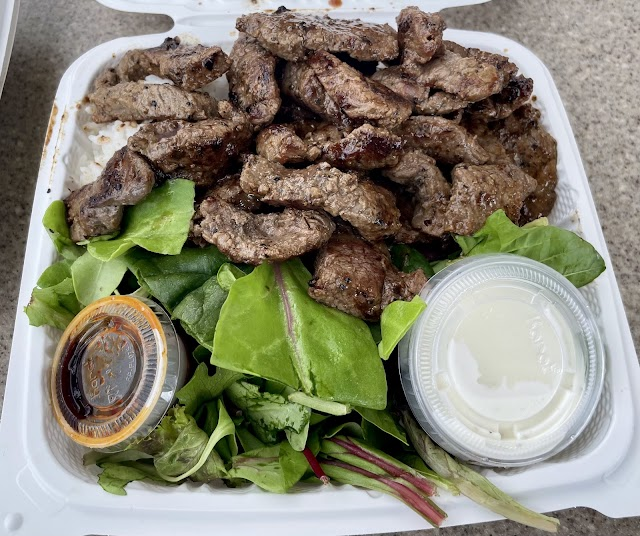
| 営業時間 | 月・火・水・木・日 10:30〜19:30 ／ 金・土 10:30〜19:45 |
|---|---|
| 定休日 | なし(要最終確認) |
| 住所 | 2161 Kālia Rd, Honolulu, HI 96815 |
| 予約 | 不可 — ☎ (808) 861-9966 ／ 公式サイト |
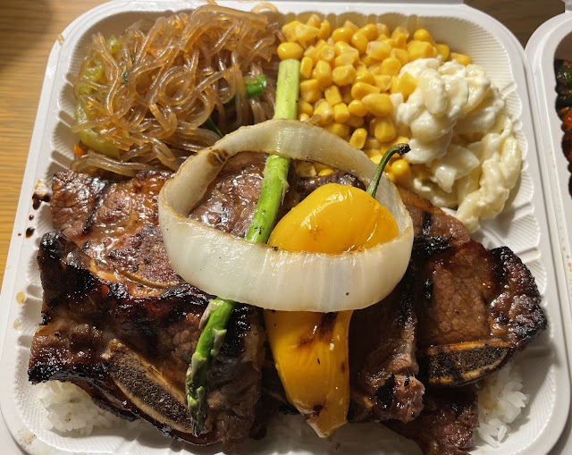
| 営業時間 | 月・火・水・木・金・土 8:00〜21:00 |
|---|---|
| 定休日 | 日曜 |
| 住所 | 2427 Kūhiō Ave., Honolulu, HI 96815 |
| 予約 | 不要 — ☎ (808) 926-9717 ／ 公式サイト |
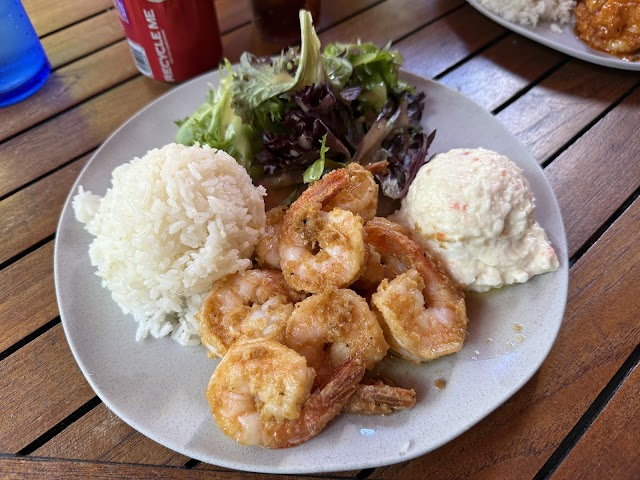
| 営業時間 | 月・火・水・木・金・土・日 10:00〜1:00 |
|---|---|
| 定休日 | なし(要最終確認) |
| 住所 | 2425 Kūhiō Ave., Honolulu, HI 96815 |
| 予約 | 不要 — ☎ (808) 444-3636 ／ 公式サイト |
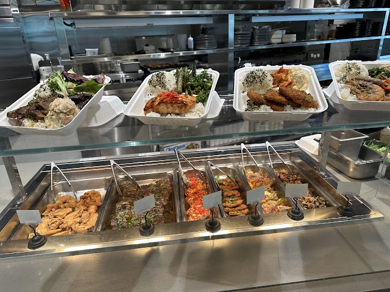
| 営業時間 | 月・火・水・木・金・土・日 6:00〜22:00 |
|---|---|
| 定休日 | なし(要最終確認) |
| 住所 | 2380 Kūhiō Ave. 2nd Floor, Honolulu, HI 96815 |
| 予約 | 不要 — ☎ (808) 923-2022 ／ 公式サイト |
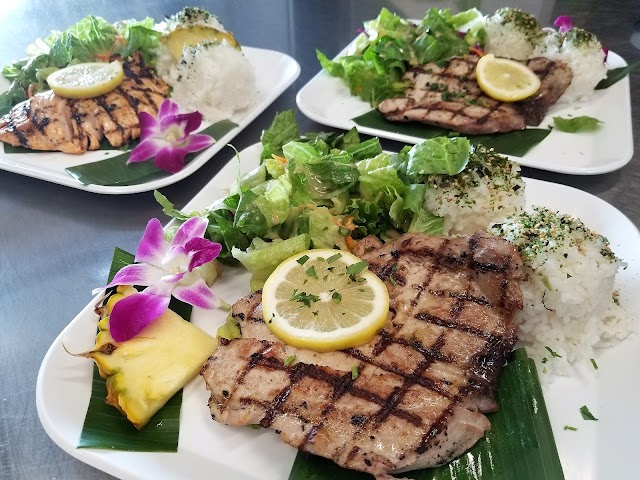
| 営業時間 | 月・火・水・木・金・土・日 8:00〜20:30 |
|---|---|
| 定休日 | なし(要最終確認) |
| 住所 | 2699 Kalākaua Ave, Honolulu, HI 96815 |
| 予約 | 不可 — ☎ (808) 924-2233 ／ 公式サイト |
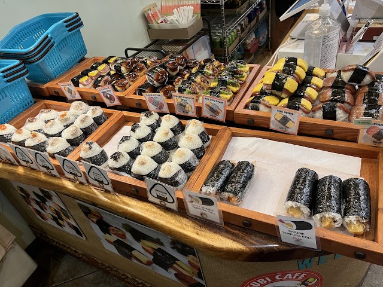
| 営業時間 | 月・火・水・木・金・土・日 7:00〜20:00 |
|---|---|
| 定休日 | なし(要最終確認) |
| 住所 | 2427 Kūhiō Ave., Honolulu, HI 96815 |
| 予約 | 不要 — ☎ (808) 921-0168 ／ 公式サイト |
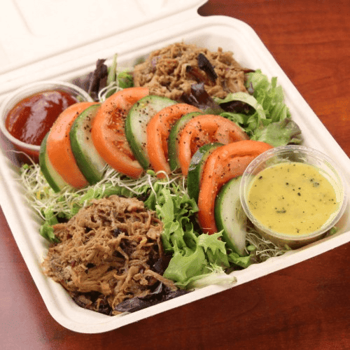
| 営業時間 | 月・火・水・木・金・土・日 7:00〜21:00 |
|---|---|
| 定休日 | なし(要最終確認) |
| 住所 | 2310 Kūhiō Ave. #1-A, Honolulu, HI 96815 |
| 予約 | 不要 — ☎ (808) 888-8833 ／ 公式サイト |
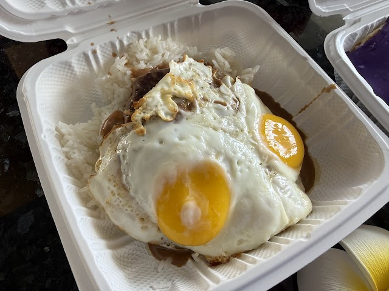
| 営業時間 | 月・火・水・木・金・土・日 7:00〜14:00 |
|---|---|
| 定休日 | なし(要最終確認) |
| 住所 | 445 Seaside Ave Apt 3C, Honolulu, HI 96815 |
| 予約 | 不可 — ☎ (808) 520-7940 ／ 公式サイト |
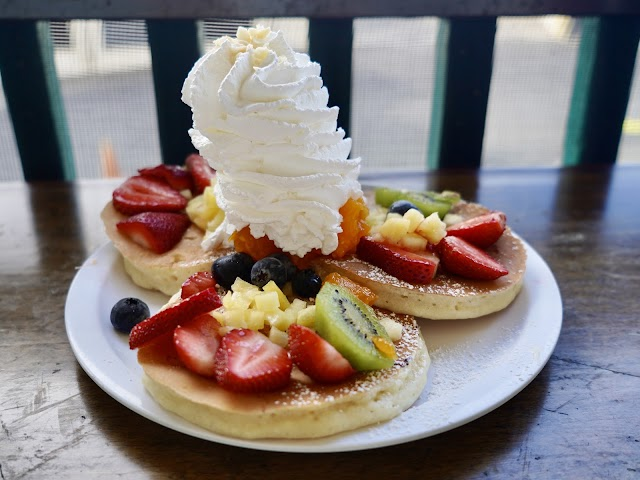
| 営業時間 | 月・火・水・木・金・土・日 7:00〜14:00 |
|---|---|
| 定休日 | なし(要最終確認) |
| 住所 | 343 Saratoga Rd, Honolulu, HI 96815 |
| 予約 | 不可 — ☎ (808) 923-3447 ／ 公式サイト |
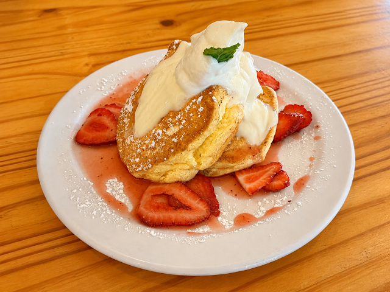
| 営業時間 | 月・木・金・土・日 8:00〜14:00 |
|---|---|
| 定休日 | 火・水曜 |
| 住所 | 444 Niu St, Honolulu, HI 96815 |
| 予約 | 推奨 — ☎ (808) 429-0945 ／ 公式サイト ／ 予約サイト |
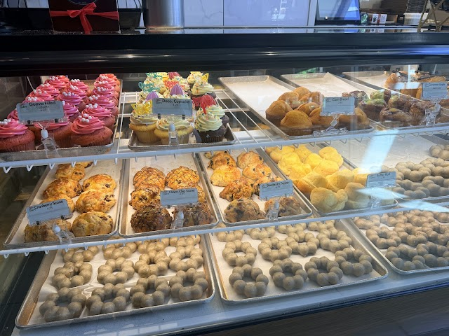
| 営業時間 | 月・火・水・木・金・土・日 7:00〜22:00 |
|---|---|
| 定休日 | なし(要最終確認) |
| 住所 | 2330 Kalākaua Ave Level 3, Honolulu, HI 96815 |
| 予約 | 不要 — ☎ (808) 922-2488 ／ 公式サイト |
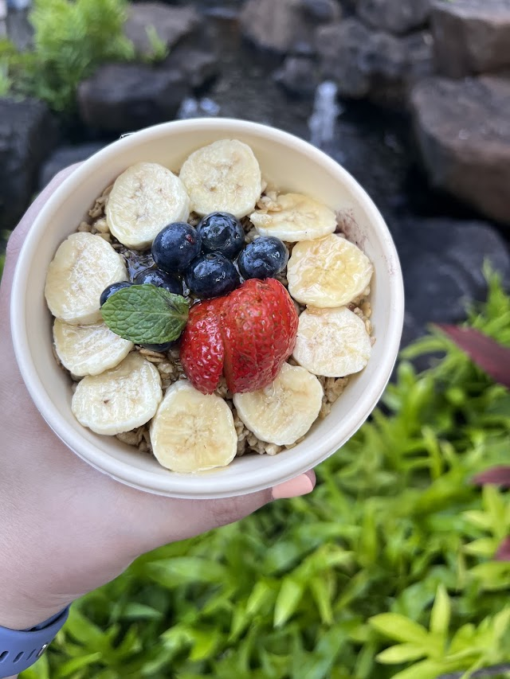
| 営業時間 | 月・火・水・木・金・土・日 5:00〜22:00 |
|---|---|
| 定休日 | なし(要最終確認) |
| 住所 | 2301 Kalākaua Ave #C215, Honolulu, HI 96815 |
| 予約 | 不要 — 公式サイト |
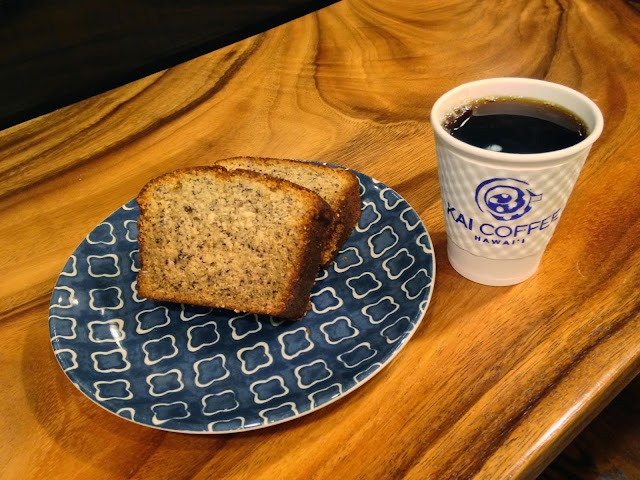
| 営業時間 | 月・火・水・木・金・土・日 5:30〜21:00 |
|---|---|
| 定休日 | なし(要最終確認) |
| 住所 | 2424 Kalākaua Ave #129, Honolulu, HI 96815 |
| 予約 | 不要 — ☎ (808) 923-1700 ／ 公式サイト |
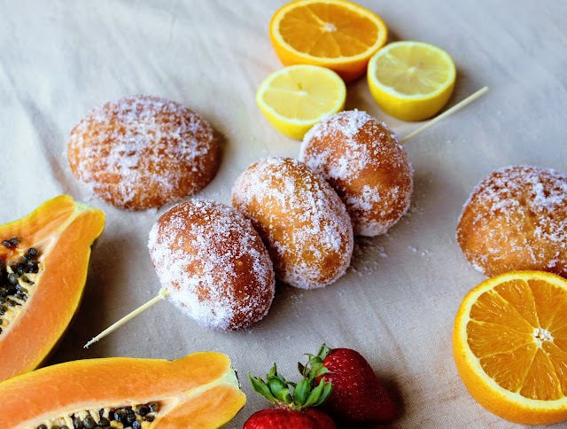
| 営業時間 | 月・火・水・日 6:00〜21:00 ／ 木・金・土 6:00〜21:30 |
|---|---|
| 定休日 | なし(要最終確認) |
| 住所 | 2233 Kalākaua Ave, Honolulu, HI 96815 |
| 予約 | 不要 — ☎ (808) 744-0422 ／ 公式サイト |
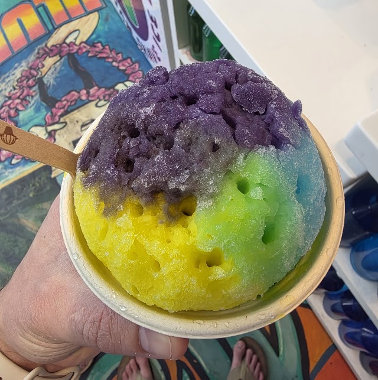
| 営業時間 | 月・火・水・木・金・土・日 11:00〜22:30 |
|---|---|
| 定休日 | なし(要最終確認) |
| 住所 | 349 Seaside Ave, Honolulu, HI 96815 |
| 予約 | 不要 — ☎ (808) 683-6229 ／ 公式サイト |
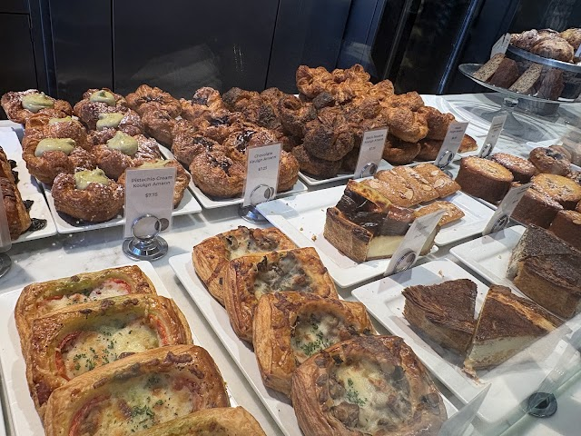
| 営業時間 | 月・火・水・木・金・土・日 7:00〜16:00 |
|---|---|
| 定休日 | なし(要最終確認) |
| 住所 | Kuhio Mall Entrance, 2330 Kalākaua Ave, Honolulu, HI 96815 |
| 予約 | 不要 — ☎ (808) 450-2364 ／ 公式サイト |
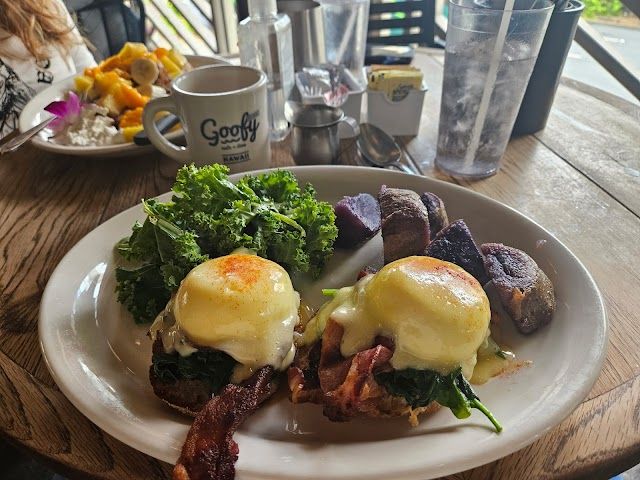
| 営業時間 | 月・火・水・木・金・土・日 7:00〜13:30, 17:00〜21:00 |
|---|---|
| 定休日 | なし(要最終確認) |
| 住所 | 1831 Ala Moana Blvd #201, Honolulu, HI 96815 |
| 予約 | 可 — ☎ (808) 943-0077 ／ 公式サイト ／ 予約サイト |
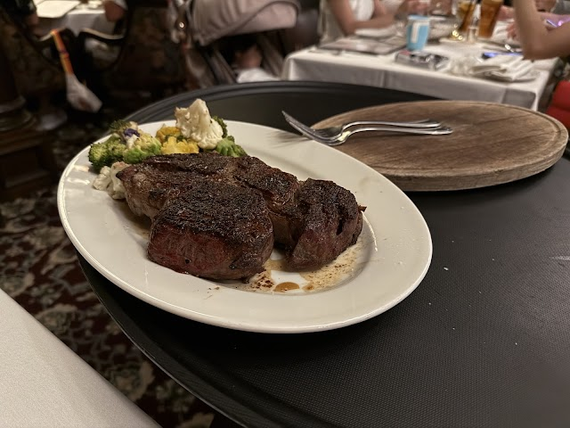
| 営業時間 | 月・火・水・木・金・土・日 17:00〜21:00 |
|---|---|
| 定休日 | なし(要最終確認) |
| 住所 | 2440 Kūhiō Ave., Honolulu, HI 96815 |
| 予約 | 要 — ☎ (808) 922-5555 ／ 公式サイト ／ 予約サイト |
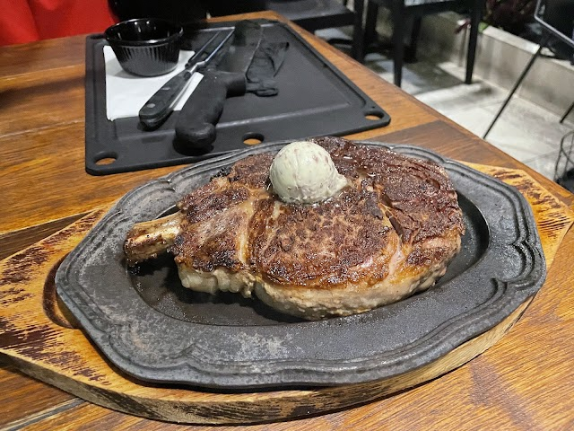
| 営業時間 | 月・火・水・木・金・土・日 17:00〜21:30 |
|---|---|
| 定休日 | なし(要最終確認) |
| 住所 | 364 Seaside Ave 1st Floor, Honolulu, HI 96815 |
| 予約 | 推奨 — ☎ (808) 600-3431 ／ 公式サイト ／ 予約サイト |
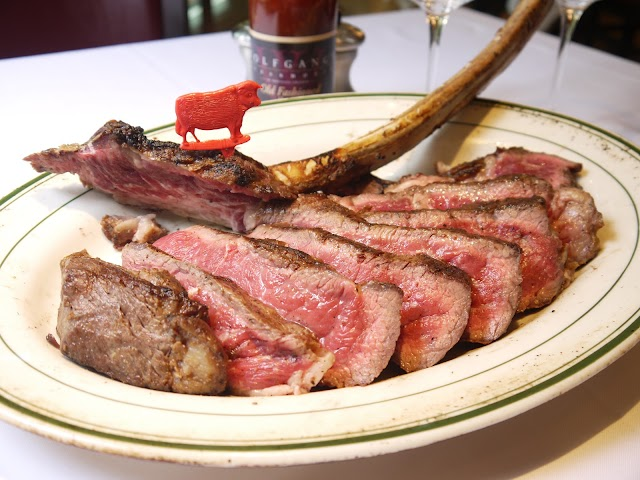
| 営業時間 | 月・火・水・木・日 11:00〜22:30 ／ 金・土 11:00〜23:00 |
|---|---|
| 定休日 | なし(要最終確認) |
| 住所 | 2301 Kalākaua Ave, Honolulu, HI 96815 |
| 予約 | 要 — ☎ (808) 922-3600 ／ 公式サイト ／ 予約サイト |
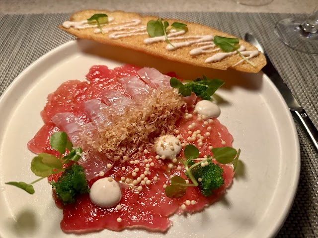
| 営業時間 | 水・木・金・土・日 17:00〜20:30 |
|---|---|
| 定休日 | 月・火曜 |
| 住所 | 2259 Kalākaua Ave, Honolulu, HI 96815 |
| 予約 | 要 — ☎ (808) 931-8642 ／ 公式サイト ／ 予約サイト |
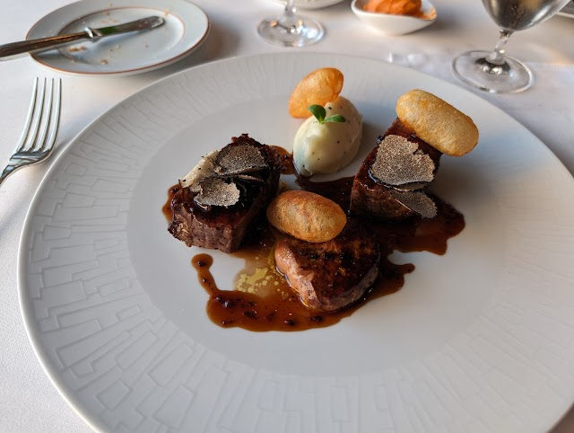
| 営業時間 | 火・水・木・金・土 17:30〜20:30 |
|---|---|
| 定休日 | 月・日曜 |
| 住所 | 2199 Kālia Rd, Honolulu, HI 96815 |
| 予約 | 要 — ☎ (808) 923-2311 ／ 公式サイト ／ 予約サイト |
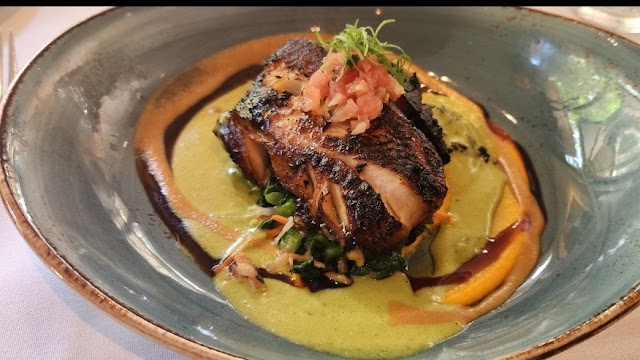
| 営業時間 | 月・火・水・木・金・土・日 11:30〜21:30 |
|---|---|
| 定休日 | なし(要最終確認) |
| 住所 | 226 Lewers St, Honolulu, HI 96815 |
| 予約 | 推奨 — ☎ (808) 923-7697 ／ 公式サイト ／ 予約サイト |
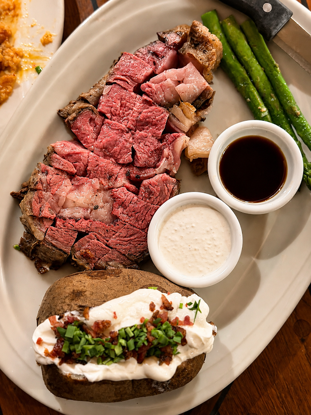
| 営業時間 | 月・火・水・木・金・土 15:30〜23:00 ／ 日 10:00〜14:00, 15:30〜23:00 |
|---|---|
| 定休日 | なし(要最終確認) |
| 住所 | 1765 Ala Moana Blvd, Honolulu, HI 96815 |
| 予約 | 推奨 — ☎ (808) 941-6669 ／ 公式サイト ／ 予約サイト |
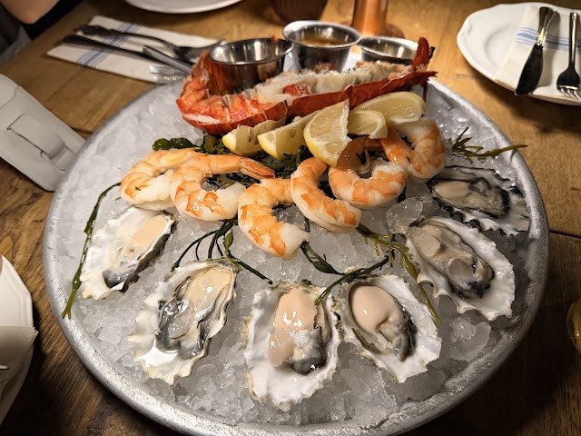
| 営業時間 | 月・火・水・木 16:00〜22:00 ／ 金・土 16:00〜23:00 ／ 日 10:30〜14:30, 16:00〜22:00 |
|---|---|
| 定休日 | なし(要最終確認) |
| 住所 | 2330 Kalākaua Ave Level 3, Honolulu, HI 96815 |
| 予約 | 推奨 — ☎ (808) 201-7333 ／ 公式サイト ／ 予約サイト |
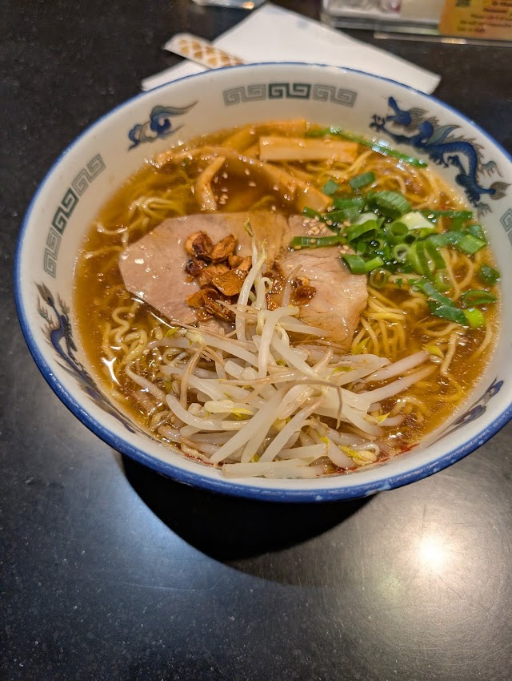
| 営業時間 | 月・火・水・木・金・土・日 11:00〜23:15 |
|---|---|
| 定休日 | なし(要最終確認) |
| 住所 | 2141 Kalākaua Ave #1, Honolulu, HI 96815 |
| 予約 | 不可 — ☎ (808) 922-7960 ／ 公式サイト |
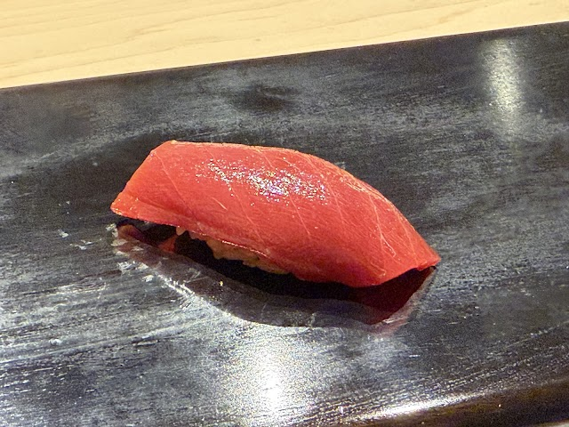
| 営業時間 | 火・水・木・金・土・日 17:00〜22:30 |
|---|---|
| 定休日 | 月曜 |
| 住所 | 383 Kalaimoku St, Honolulu, HI 96815 |
| 予約 | 要 — ☎ (808) 729-9717 ／ 公式サイト ／ 予約サイト |
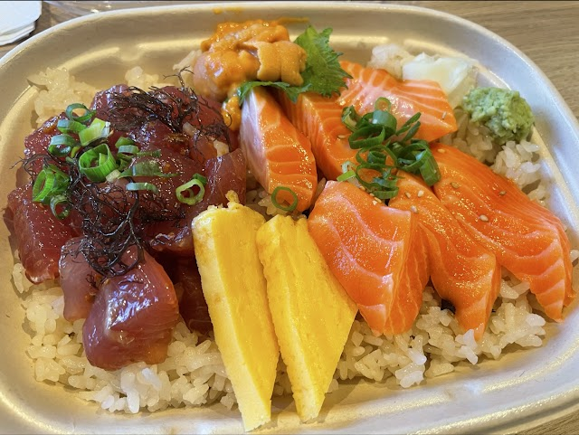
| 営業時間 | 月・土 17:00〜20:00 ／ 火・水・木・金 11:30〜14:00, 17:00〜20:00 |
|---|---|
| 定休日 | 日曜 |
| 住所 | 2250 Kalakaua Avenue by, Royal Hawaiian Ave, Honolulu, HI 96815 |
| 予約 | 不可 — ☎ (808) 230-3470 ／ 公式サイト |
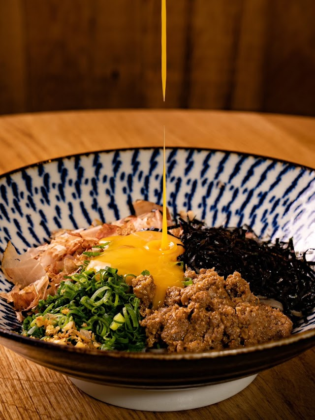
| 営業時間 | 月・火・水・木・金・土・日 16:00〜23:00 |
|---|---|
| 定休日 | なし(要最終確認) |
| 住所 | 413 Seaside Ave #1f, Honolulu, HI 96815 |
| 予約 | 推奨 — ☎ (808) 212-9252 ／ 公式サイト ／ 予約サイト |
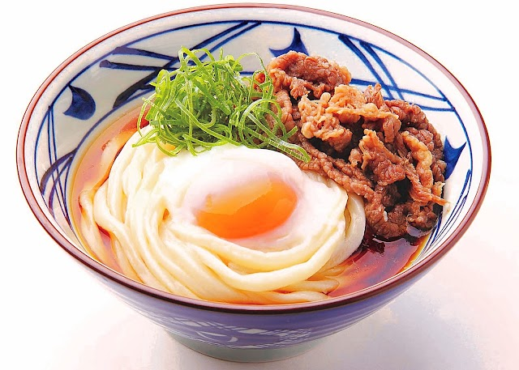
| 営業時間 | 月・火・水・木・金・土・日 10:00〜23:00 |
|---|---|
| 定休日 | なし(要最終確認) |
| 住所 | 2310 Kūhiō Ave., Honolulu, HI 96815 |
| 予約 | 不可 — ☎ (808) 931-6000 ／ 公式サイト |
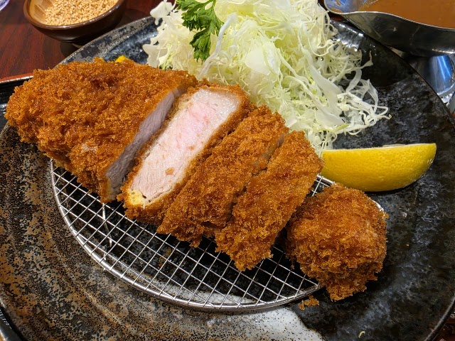
| 営業時間 | 月・火・水・木・金・土・日 11:00〜14:30, 16:00〜0:00 |
|---|---|
| 定休日 | なし(要最終確認) |
| 住所 | 255 Beach Walk, Honolulu, HI 96815 |
| 予約 | 推奨 — ☎ (808) 926-8082 ／ 公式サイト ／ 予約サイト |
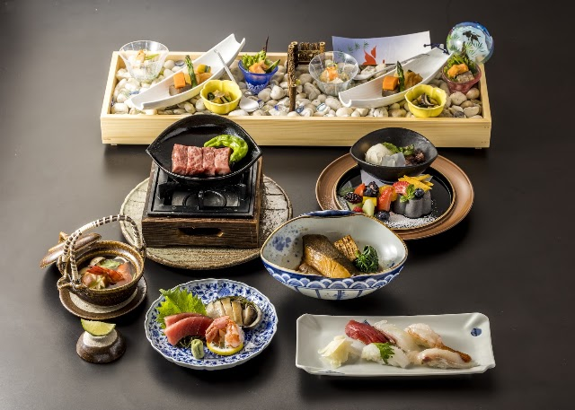
| 営業時間 | 月・火・水・木・金・土・日 11:30〜13:30, 17:00〜21:30 |
|---|---|
| 定休日 | なし(要最終確認) |
| 住所 | 2233 Kalākaua Ave B307, Honolulu, HI 96815 |
| 予約 | 推奨 — ☎ (808) 922-5511 ／ 公式サイト ／ 予約サイト |
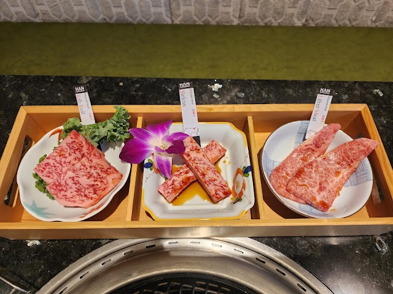
| 営業時間 | 月 4:00〜22:00 ／ 火・水・木・金・土・日 12:00〜15:00, 16:00〜22:00 |
|---|---|
| 定休日 | なし(要最終確認) |
| 住所 | 2380 Kūhiō Ave. #104, Honolulu, HI 96815 |
| 予約 | 推奨 — ☎ (808) 200-2729 ／ 公式サイト ／ 予約サイト |
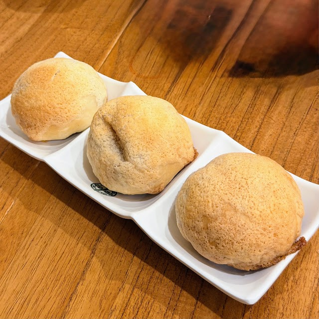
| 営業時間 | 月・火・水・木・金・土・日 11:00〜21:00 |
|---|---|
| 定休日 | なし(要最終確認) |
| 住所 | 2201 Kalākaua Ave A-307, Honolulu, HI 96815 |
| 予約 | 可 — ☎ (808) 888-6088 ／ 公式サイト ／ 予約サイト |
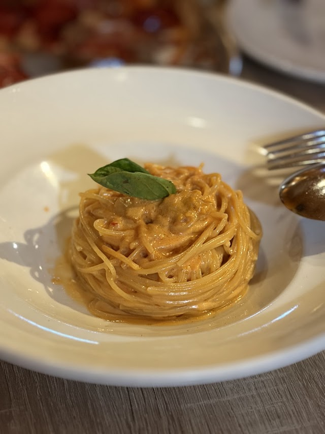
| 営業時間 | 月・火・水・木・金・土・日 16:45〜21:15 |
|---|---|
| 定休日 | なし(要最終確認) |
| 住所 | 2552 Kalākaua Ave, Honolulu, HI 96815 |
| 予約 | 推奨 — ☎ (808) 931-6273 ／ 公式サイト ／ 予約サイト |
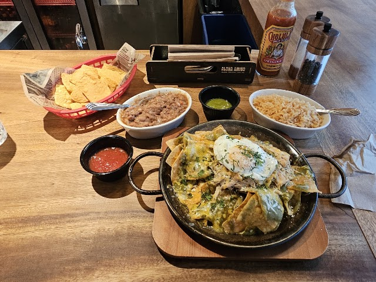
| 営業時間 | 月・火・水・木・金・土・日 16:00〜23:00 |
|---|---|
| 定休日 | なし(要最終確認) |
| 住所 | 400 Royal Hawaiian Ave, Honolulu, HI 96815 |
| 予約 | 可 — ☎ (808) 200-3954 ／ 公式サイト ／ 予約サイト |
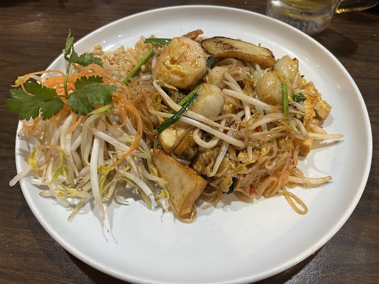
| 営業時間 | 月・火・水・木・金・土・日 11:00〜21:30 |
|---|---|
| 定休日 | なし(要最終確認) |
| 住所 | 408 Lewers St, Honolulu, HI 96815 |
| 予約 | 不要 — ☎ (808) 923-5320 ／ 公式サイト |
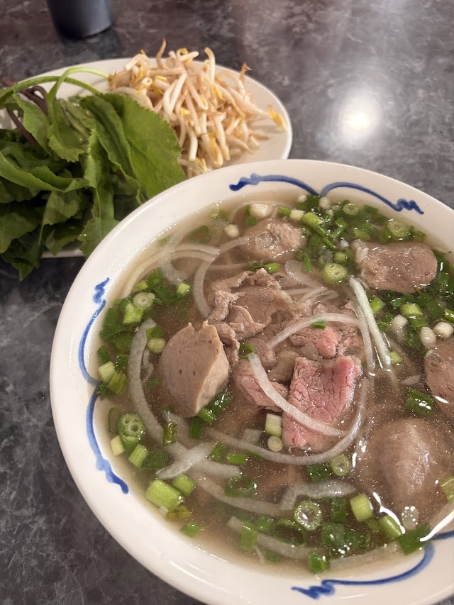
| 営業時間 | 月・火・水・木・金・土・日 11:00〜21:00 |
|---|---|
| 定休日 | なし(要最終確認) |
| 住所 | 478 Ena Rd, Honolulu, HI 96815 |
| 予約 | 不要 — ☎ (808) 946-2299 ／ 公式サイト |
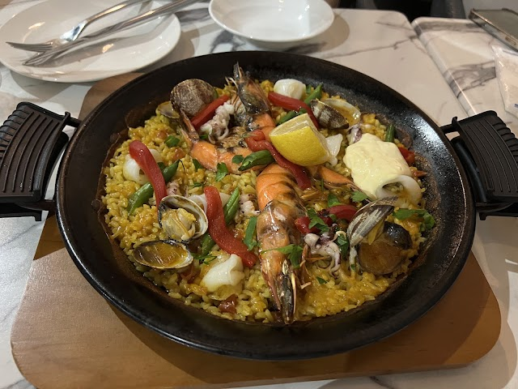
| 営業時間 | 月・火・水・木・金・土・日 17:00〜22:00 |
|---|---|
| 定休日 | なし(要最終確認) |
| 住所 | 346 Lewers St #1f, Honolulu, HI 96815 |
| 予約 | 推奨 — ☎ (808) 772-4533 ／ 公式サイト ／ 予約サイト |
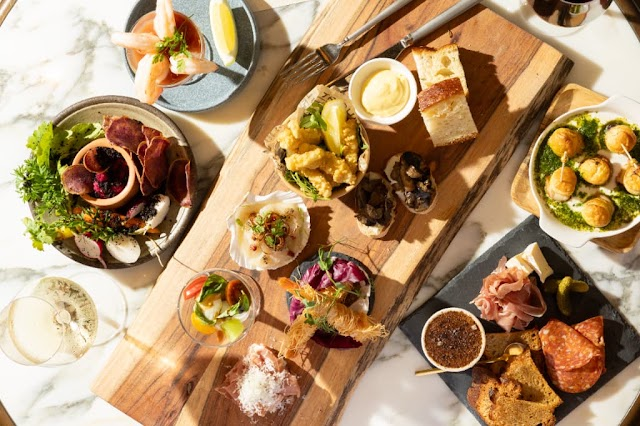
| 営業時間 | 月・火・水・木・金・土・日 11:30〜22:00 |
|---|---|
| 定休日 | なし(要最終確認) |
| 住所 | 2250 Kalākaua Ave #101, Honolulu, HI 96815 |
| 予約 | 可 — ☎ (808) 200-3241 ／ 公式サイト ／ 予約サイト |
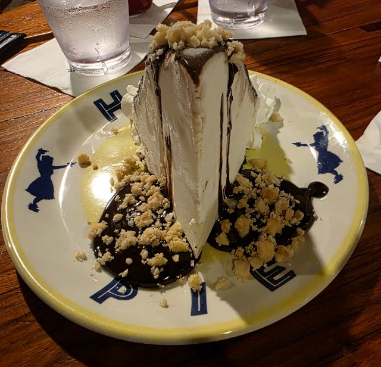
| 営業時間 | 月・火・水・木・金・土・日 7:00〜0:00 |
|---|---|
| 定休日 | なし(要最終確認) |
| 住所 | 2335 Kalākaua Ave #116, Honolulu, HI 96815 |
| 予約 | 推奨 — ☎ (808) 922-2268 ／ 公式サイト |
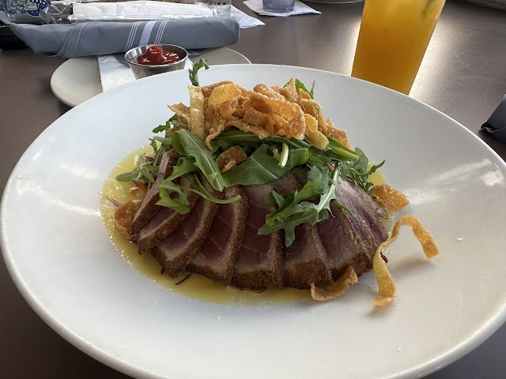
| 営業時間 | 月・火・水・木・金・土・日 11:00〜23:00 |
|---|---|
| 定休日 | なし(要最終確認) |
| 住所 | 2259 Kalākaua Ave, Honolulu, HI 96815 |
| 予約 | 不要 — ☎ (808) 931-8641 ／ 公式サイト |
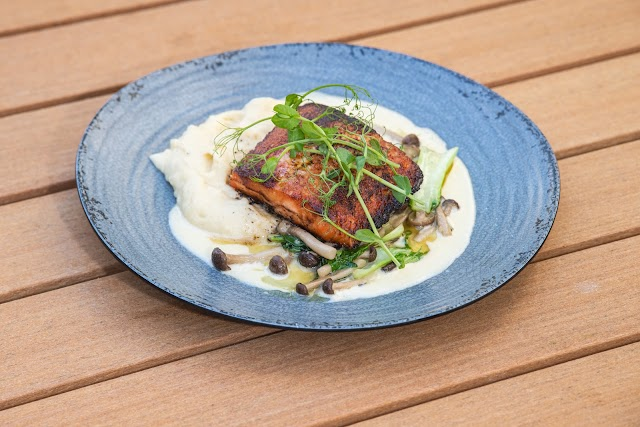
| 営業時間 | 月・火・水・木・金・土・日 11:00〜21:00 |
|---|---|
| 定休日 | なし(要最終確認) |
| 住所 | 2169 Kālia Rd, Honolulu, HI 96815 |
| 予約 | 推奨 — ☎ (808) 924-4990 ／ 公式サイト ／ 予約サイト |
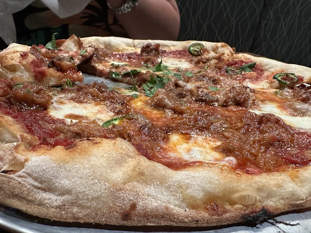
| 営業時間 | 月・火・水・木・金・土・日 11:00〜23:00 |
|---|---|
| 定休日 | なし(要最終確認) |
| 住所 | 2300 Kalākaua Ave, Honolulu, HI 96815 |
| 予約 | 不要 — ☎ (808) 843-2739 ／ 公式サイト |
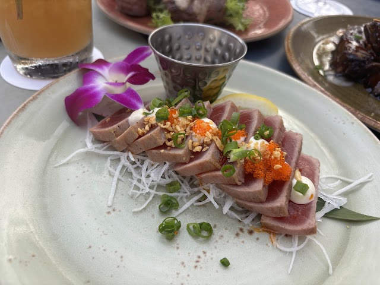
| 営業時間 | 月・火・水・木・金・土・日 7:00〜10:30, 11:30〜21:00 |
|---|---|
| 定休日 | なし(要最終確認) |
| 住所 | 2199 Kālia Rd #1936, Honolulu, HI 96815 |
| 予約 | 推奨 — ☎ (808) 923-2311 ／ 公式サイト |
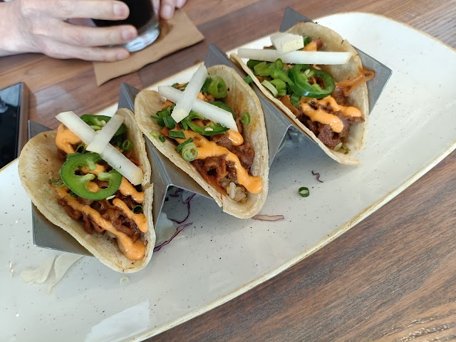
| 営業時間 | 月・火・水・木・金・土・日 7:00〜23:00 |
|---|---|
| 定休日 | なし(要最終確認) |
| 住所 | 2169 Kālia Rd Unit 111, Honolulu, HI 96815 |
| 予約 | 推奨 — ☎ (808) 900-4226 ／ 公式サイト ／ 予約サイト |
本ガイドは個人利用目的で作成。掲載情報は2026年9月時点の調査に基づく。写真出典: Google Maps投稿写真(©各投稿者/Google)。